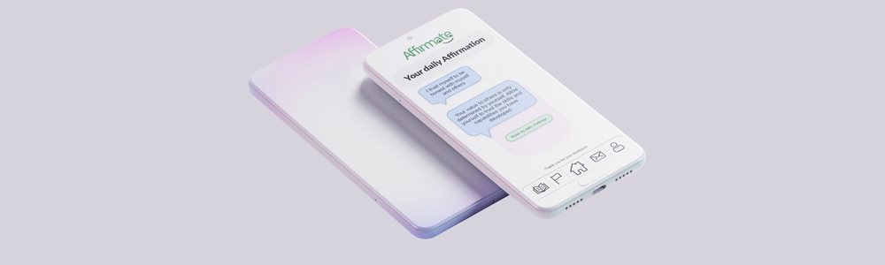

Creating a personal and approachable wellness platform.
Company
Affirmate
Year
2021 - 4 Months
Team
Business Analyst
UX Design
Graphic Design
Affirmate is a capstone project completed during my final term of Global Business and Digital Arts at the University of Waterloo. It was created with the support, hard-work, and humility of my closest friends, and serves as a great cap to four years of determination. From concept to deliverable, this project was created within four months and a global pandemic.
The challenge
Affirmate all started with the United Nations Sustainability Development Goals (SDGs). My course, GBDA402 was concerned with growing an idea to be a fully crafted concept for a socially-conscious business. And like all great concepts, it starts with some research. I started by diving into research of SDG-3, Good Health and Well-Being. More specifically, I was interested in SDG-3.5, which aims to strengthen the prevention and treatment of abuse, including narcotic drug abuse and harmful use of alcohol. I was drawn to the many connections between Mental Health and Substance abuse. What surprised me most was the was that substance abuse can commonly be drawn from underlying mental health concerns which are further stimulated by negative feedback loops.

The Habit Loop
Popularized in Charles Duhigg's book The Power of Habit, a habit loop explains how the actions we preform on routine are coordinated by
- Cues (which signify a need),
- Routines (actions to fulfil the need), and
- Rewards (the feelings or reactions post routine).
However, some habit loops are defined by only some actions:
| Cue | Routine | Reward |
| Feeling Mentally Unwell | ? | Feeling Mental Relief |
For Mental Health and Substance Abuse, the gap to meet positive reward is commonly filled by unhealthy means.
In the end, we always meet our needs in either healthy or unhealthy ways. Moreover, for those looking to find healthier alternatives such as group support, would have greatly decreased options due to the ongoing COVID-19 Pandemic. Motivated by my research, I was set with a goal:
How might we reduce harmful use of alcohol & substances within adults by improving connection and mental health while distanced?
After that, it was time to get creative! Our task was to organize our research, thoughts, and ideas into an organized package ... all on a cereal box! Here you'll see some original environment analysis, user journey map, Jobs-To-Be-Done, and ideas.
This also led me to my original value proposition to key users: "helps me feel human, and that my pain is worth healing". Up until this point, the work had been individual. All groups had been working separately to come up with an idea to pitch to our team, then we would decide on a concept or direction which spoke to us all. We all had an interest in a wellness-based platform, with a focus on a more approachable or casual focus.
Iteration 1
Trying things out
By this point, we had been noodling on our ideas for a couple weeks, and it was time to get things going! We all knew we wanted to create an approachable wellness platform. An opportunity outlined from our persona analysis was to leverage personal affirmations. Affirmations are little bites of positive messaging with the goal to boost your mindset, and give direction to how you go about your day. Our first major goal was to build and test our "push button for affirmation" MVP concept.
As business analyst for our first iteration, I set out on lots of environmental analysis. For this iteration, our goal was to conduct industry analysis, organize customer profiles, establish our value proposition, and develop the roots of our Business Model Canvas. Mental wellbeing related apps already cover a range of topics, so we knew we had to find a niche and differentiation to establish ourselves within the market. Many apps do their best to suit a myriad of different needs and tasks. Looking towards our customer profiles, we recognized that having a simple and organized platform with an essential focus on affirmations would give us direction.
Our initial experience focus will be on the MVP of the affirmation button, but this informs our developments in future iterations. Key resources to our product are an easy to use system, as well as strong user support. We want our users’ interactions to be as simplified as possible, and future developments such as personalized affirmations would be organized through our end (for example, an email from us saying “Stacy would like a personalized affirmation from you”).
We also recognize that our current customer segment is Mass Marketed, but could find differentiation through simplicity of our product. Our Cost Structure is of value to us, as it would be almost entirely fixed cost based, with the core of our costs coming through potential office space (which could be mitigated through remote working), servers and hosting, and salaries. Finally, we have our Revenue Streams. Our current solution is a freemium model, with a subscription revenue stream. The free model could include a once daily, simple affirmation before the Affirmation Jar “locks”. A subscription would unlock potential premiums such as unlimited affirmations, a diverse library of affirmation categories, customized and user submitted affirmations, or even celebrity read affirmations.
Try out v1!Iteration 2
Making the pizza
Our first iteration was in the books, and it was time for everyone to change roles, and keep moving forward! For our first iteration, I was primarily focusing on User Experience Design. After taking a closer look at what competitors are doing as well as the results of our MVP tests, I had to main goals: organizing user personas, and building out features.
Personas
Our goal around personas was to craft personas that served to our users' intentions and actions. This article really influenced our work! We started by creating a Google form to get more insight about how people approach mental health. We based our questions on what motivates people, what gets them out of bed in the morning, and what keeps them up at night. By learning how people approach their days and relate to others, we developed personas to help fill in the gaps.
After getting lots of form results, we brought them into Miro, and grouped them into common themes:
When we grouped and organized our research, we found a few common trends, and crafted our four personas from there:
The Connector
Energy derived from others
The Perserverer
A positive day is one with no negatives
The Planner
Planning is important
The Doubter
Spends time worrying
When we had all the initial research and understanding of our user base together, we got started.
Building Things Out
With our new found personas and research from our MVP prototype, we started on building out v2 prototype. We knew that our concept would stay the same, but we knew of new directions. Here are a few of our core changes:
Conversation Style Affirmations
Based on our persona research, we found that the Connector and the other personas really valued communication with others. With our original concept of simply an affirmation on the screen, it came across as cold. We changed the Affirmation delivery to be on a conversation style, so people would feel like they're invested in the chat, and would feel like they can trust their words.
Wellness Challenges
We added the wellness challenges as an opportunity to remind users of Affirmate throughout their day, and encourage them to build on efforts of the affirmations. Our concept is for challenges to also add an element of gamification, keep track of records on challenge completion.
Journal Entries
As users complete challenges and read affirmations, all their good days and bad will be saved in their journal. This is their hub of information through their wellness journey. On any given day, a user will read and affirmation, and hopefully complete a challenge. From here, they can make notes, write entries, and keep a record of how they're feeling.
Overall, our team was very excited to see where our platform was growing! What stared as a "How Might We", was developing itself more and more.
Try out v2 - Freemium! Try out v2 - Paid!Iteration 3
Cleaning up shop
Two iterations down, and we were really dialing down to what works best for Affirmate. By this point, we had plenty of business research and user tests completed, and we were ready to pool efforts for the final push! For our first iteration, I was primarily focusing on Graphic Design. Of the changes we made from Iteration 2 to Iteration 3, visual design was definitely the largest. From our user testing, some found the brand to be slightly saddening with the monochromatic blue tones. We figured it was more calming, but it goes to show to test your assumptions!
A New Face in the Game
We knew that Affirmate needed to be more "friendly". We wanted to lean on the welcoming and more casual differentiator mindset we had from the get-go, and we needed a new face. Thus became the new headers of Affirmate!
Our visual identity changed quite a bit! It was also in this iteration that we changed the name of our project from Affirmation Jar to Affirmate. The best innovations were the brighter color palette, and personification of the Affirmate logos. We hoped that the upgraded looks and more friendly colors would boost trust in users.
Final Product
Try out our final deliverable!After a semester full of hard work, we reached our finale! My team and I are all so proud of our final deliverable. To see our hard work grow from an idea of social good, to a full product designed to support people.
One of my favourite parts of this project was understanding how users could interact with Affirmate. We developed ideas and features not based on what users said, but based on what they do. For example, we found a trend of user interactions in persona development surrounding lower trust in technology, but high impact of connection with those around them. This was the key to our mindset around personalized affirmations. We could utilize the trust people had with those who are close to them, and deliver it within a clean and simple format.
In our lives, we all have needs that need to be met. The funny thing is that we will always meet those needs, whether in healthy or unhealthy ways. Connection, Certainty, Variety, and Significance are core needs to our lives, and we can make active choices on how to meet these needs in our lives. Looking from the outside, we can see the choices we make and how they affect us. But sometimes life gets in the way.
Thinking back to the start of the semester, I was driven by my understanding of the habit loop. Through Affirmate, our team knows that users will find an element which speaks to their needs. Affirmate was never intended to be an all in one program to serve an individual's mental health. Instead, Affirmate meets our goal to support users in recognizing their cues, and tuning their routine towards healthier mental development.
What I Learned
This was the final project of my undergraduate career. Completed during the COVID-19 pandemic, finishing this project was bittersweet. It meant saying goodbye to many of things that I loved about being a student, and preparing for the vast unknown of what to do next. At the start of this project, I was very unsure about what I wanted to do for a career. I knew I had skills in a grand array through business, design, and tech, but there never seemed to be a sticking point. It dawned on me that working in Product Design can serve as a great combination of these skills! I've always been drawn to exciting new ideas, and I've always held that at the backbone of my motivation. I thrive in exciting atmospheres, tying it with my curiosity meets the sweet spot.
I think what served this project the most was the support and drive of my team. Working with some of my closest friends to round out our university careers was such a treat. What made this project successful was the team's ability to try things out! We recognized the great privilege we had as students to simply test out what we think we knew about Product Design, and work hard through the process. It allowed us to take chances, and empower everyone to simply do their best.
Would I say that Affirmate is perfect? Of course not. What project ever is? I have no clue what I'll be working on in the future, but I do know that I have an invigorated curiosity for Product Design, and great memories with my friends to drive me forward.
'till next time!
-Noah